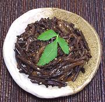

|
Fernbrake BanchanKorea - Gosari-namul | ||||
| Serves: Effort: Sched: DoAhead: |
4 ban ** 1 day Yes |
Braken fern is a popular vegetable in Korea, fresh or dried. This dish is one of the many "banchan" (small side dishes) served with Korean meals. In North America, banchans are usually served in tiny individual bowls. In Korea they are served in larger communal bowls. | |||
|
6 3 2 1 2 1 1 1 |
oz oz cl T T t t t |
Fernbrake (1) Onion Garlic Oil Soy Sauce Sugar Sesame Oil, dark Sesame, toasted (2) |
This recipe makes 7 ounces. Note: I have cut the sugar to half what a pattern recipe calls for - adjust to your preference. Make - (25 min + 12 hrs for dried fern)
|